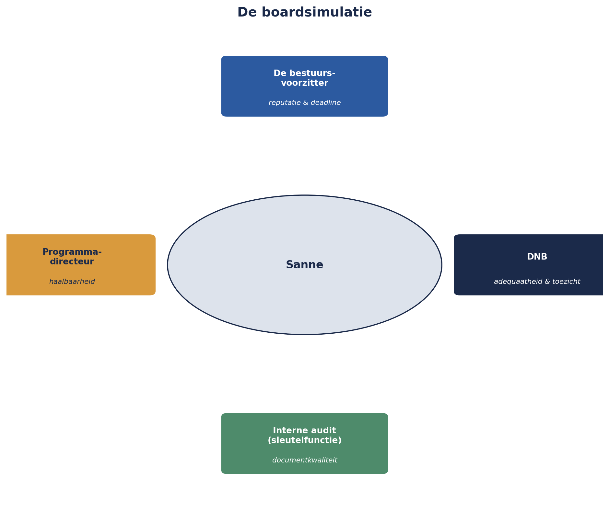

Deel 30 — Masterproef
Niveau 3 — Expert · Reader (twee dagdelen) · SLUITSTUK VAN DE HELE CURSUS
30.0 Zomer 2027
Zes maanden voor de definitieve invaardatum van 1 januari 2028 meldt Verantis Pensioenadministratie een ernstige systeemstoring. Wat eerst een gewone storing lijkt, blijkt na drie dagen een langdurig incident: de mutatieverwerking voor alle kleinere werkgeversklanten van Meridiaan komt volledig stil te liggen. Na twee weken is Verantis nog altijd niet volledig hersteld — de ketenopstopping duurt voort, precies in de periode waarin actuele, juiste mutatiedata het meest kritiek is voor de definitieve invaarberekening.
Sanne Bakhuis herkent het patroon onmiddellijk. Dit is, bijna letterlijk, het scenario dat de omgekeerde stresstest in deel 27 al had blootgelegd: een kritieke externe uitval, samenvallend met verhoogde transitiedruk. Het is ook het scenario waarvan het BCM-hiaat — vastgesteld in deel 25, nooit volledig gedicht — nu de volle consequentie laat zien. En het informele signaal uit de casuïstiek-marathon (deel 29, situatie 1) — “de systemen van Verantis haperen de laatste tijd vaker” — blijkt, achteraf bezien, een vroege waarschuwing te zijn geweest die onvoldoende was opgevolgd.
De ORSA-update die Sanne met spoed uitvoert, bevestigt wat ze zes maanden eerder al vreesde: het operationele transitierisico was structureel te laag ingeschat. Het bestuur, onder grote druk om de wettelijke deadline te halen, wil de invaardatum van 1 januari 2028 handhaven.
Sanne moet nu het zwaarste advies van haar loopbaan geven — met, voor het eerst in deze cursus, het wettelijke escalatierecht uit deel 23 niet als abstract concept, maar als reële, overwogen optie.
30.1 Dagdeel A: het schriftelijke advies
Opdracht: schrijf, als Sanne Bakhuis, een schriftelijk advies van maximaal tien pagina’s aan het bestuur van Meridiaan, met de volgende zeven vaste onderdelen:
1. Feitenrelaas. Wat is er precies gebeurd bij Verantis, sinds wanneer, en wat is de actuele status? Baseer dit op het Verantis-dossier dat sinds deel 25 is opgebouwd.
2. Kruisverwijzingen naar eerdere bevindingen. Expliciet, met verwijzing naar deel en bevinding: het BCM-hiaat (deel 25), het omgekeerde-stresstest-scenario (deel 27), het informele signaal (deel 29, situatie 1), en eventuele andere relevante eerdere punten (het projectierendement, het concentratierisico). Dit onderdeel toetst of het advies de hele cursusboog daadwerkelijk gebruikt, niet alleen het actuele incident geïsoleerd behandelt.
3. Geactualiseerde risicobeoordeling. Kwantitatief waar mogelijk: hoe groot is de kans dat de invaarberekening op basis van onvolledige of vertraagde mutatiedata tot fouten leidt, en wat is het geschatte gevolg? Gebruik de instrumenten uit deel 14-15 (niveau 2) — een EMV-achtige afweging tussen doorgaan en uitstellen is hier op zijn plaats.
4. Opties. Minstens twee: (a) vasthouden aan 1 januari 2028 met aanvullende maatregelen, (b) een gemotiveerd verzoek tot uitstel van de invaardatum. Voor elke optie: kosten, baten, en het residuele risico — in lijn met de responsstrategieën uit deel 6 (niveau 1) en de eis dat een rapportage opties biedt, geen enkelvoudig oordeel (deel 19, niveau 2).
5. Advies met onderbouwing. Een heldere aanbeveling — niet noodzakelijk “uitstellen”, maar wel een aanbeveling die, in lijn met de rubric van dit deel (30.3), bereid is een onderbouwd “nee, dit niet” te zeggen tegen het handhaven van de datum als de risicoanalyse dat vereist.
6. Voorwaarden en mitigatie. Als het advies “doorgaan onder voorwaarden” is: welke voorwaarden, met welke deadline, getoetst door wie?
7. Positionering van het escalatierecht. Een expliciete paragraaf, gebaseerd op Kernzin 21 (deel 28): waar staat Sanne in de driestappenroutine (overtuigen, escaleren binnen de organisatie, escaleren naar DNB)? Is dit het moment waarop, als het bestuur het advies negeert, de derde stap gerechtvaardigd zou zijn — getoetst aan de drie voorwaarden uit deel 28 (materialiteit, uitputting, documenteerbaarheid)?
30.2 Dagdeel B: de boardsimulatie
Opzet: een boardsimulatie van vijfenveertig minuten, waarin het schriftelijke advies wordt gepresenteerd en bevraagd door vier rollen. De helft van de vragen wordt vooraf gedeeld (zodat de presentator zich kan voorbereiden op de kern van elke rol se zorg); de andere helft is onvoorzien, om te testen of het advies ook onder onverwachte druk overeind blijft.
De vier rollen:
De bestuursvoorzitter. Onder grote druk om de deadline te halen — een uitstel raakt de reputatie van Meridiaan als betrouwbare, tijdige uitvoerder, in een sector waarin andere partijen al zijn overgestapt. Vooraf gedeelde vraag: “wat kost uitstel ons, concreet, in euro’s en in reputatie?” Onvoorziene vraag (voorbeeld, niet vooraf gedeeld): een directe, persoonlijke vraag over waarom Sanne dit niet eerder zo scherp heeft geagendeerd.
DNB (in de rol van een toezichthouder die, naar aanleiding van signalen uit de sector, om een toelichting vraagt — nog geen formeel onderzoek, maar een scherp gesprek). Vooraf gedeelde vraag: “is de besluitvorming rond dit uitstel of doorgaan aantoonbaar adequaat, conform artikel 46b Besluit uitvoering Pw?” Onvoorziene vraag: een confronterende vraag over waarom het BCM-hiaat uit deel 25 nooit volledig is gedicht ondanks eerdere signalering.
De sleutelfunctiehouder interne audit (deel 21, niveau 2 — een collega-sleutelfunctiehouder, niet de risicobeheerfunctie zelf). Vooraf gedeelde vraag: “is het advies zelf, als document, navolgbaar en compleet, of ontbreekt er iets structureels?” Onvoorziene vraag: een technische vraag over de kwantitatieve onderbouwing uit onderdeel 3 van het advies.
De programmadirecteur (de rol die het meest te verliezen heeft bij uitstel — verantwoordelijk voor de uitvoering van de transitie zelf). Vooraf gedeelde vraag: “welke van de voorgestelde voorwaarden zijn binnen zes maanden realistisch haalbaar?” Onvoorziene vraag: een poging het advies te relativeren (“is dit niet gewoon een normale tegenslag die elk transitieprogramma kent?”).

30.3 Beoordelingsrubric
Zes criteria, elk 1 (onvoldoende) tot 4 (uitstekend). Het geheel van deze cursus — van de risicozin uit deel 1 tot de wettelijke geschiktheid uit deel 23 — komt hier samen.
| Criterium | Wat wordt beoordeeld |
|---|---|
| Feitelijke grondigheid | Is het feitenrelaas compleet en zijn de kruisverwijzingen naar eerdere delen accuraat en relevant? |
| Kwantitatieve onderbouwing | Is de risicobeoordeling in onderdeel 3 methodisch correct en eerlijk over haar eigen aannames (Kernzin 9, deel 14)? |
| Volledigheid van de opties | Zijn beide opties (doorgaan/uitstellen) evenwichtig uitgewerkt, zonder een van beide te bevoordelen door onvolledige informatie? |
| Consistentie tussen registers | Blijft het advies, mocht het worden vertaald voor verschillende gremia (zoals in deel 19 en 29 geoefend), feitelijk consistent? |
| Ethische positionering | Is de paragraaf over het escalatierecht (onderdeel 7) eerlijk en onderbouwd, in lijn met Kernzin 21 en de drie voorwaarden uit deel 28? |
| Het onderbouwde “nee, dit niet” | Durft het advies, waar de analyse dat vereist, een ongemakkelijk “nee” uit te spreken tegen het handhaven van de datum — in plaats van een oppervlakkig “ja, met wat extra inspanning lukt het wel”? |
Het zesde criterium is doorslaggevend bij twijfel, en verdient toelichting. Een advies dat onder druk van de bestuursvoorzitter alsnog “we redden het wel” zegt, zonder dat de risicoanalyse dat rechtvaardigt, faalt op het kernpunt van deze hele cursus — ongeacht hoe goed de rest van het document is opgebouwd. Omgekeerd: een advies dat, na zorgvuldige weging, wél concludeert dat doorgaan verantwoord is (mits aan voorwaarden wordt voldaan), is even sterk als een advies dat tot uitstel concludeert — mits die conclusie evenzeer onderbouwd en niet ingegeven door druk.
Dit is Kernzin 1 (deel 1, niveau 1) — een register dat nooit een besluit heeft veranderd, heeft niet gewerkt — in zijn meest volwassen vorm: een advies dat nooit “nee” durft te zeggen, heeft nooit echt geadviseerd.
30.4 Slotreflectie: de hele cursusboog
Na de boardsimulatie sluit dit deel — en de hele cursus — af met een korte, individuele slotreflectie: welk instrument uit welk deel bleek hier, in de masterproef, onmisbaar?
Ter oriëntatie, de boog die deze cursus heeft afgelegd:
Deel 1 (niveau 1): een risicoregister met zevenenveertig regels die niets zeiden. Deel 30: een advies dat, regel voor regel, teruggrijpt op vijfentwintig delen aan opgebouwd vakmanschap.
Deel 1: de risicozin, het eerste instrument. Deel 30: diezelfde zin, nu gebruikt om een wettelijk escalatierecht te onderbouwen.
Deel 9 (niveau 1): mandaat versus beslissingsmacht, voor het eerst geïntroduceerd. Deel 28: mandaat versus invloed, met drie stappen. Deel 30: die drie stappen, voor het eerst in een situatie waar de derde stap echt op tafel ligt.
Deel 19 (niveau 2): “het register bepaalt de nadruk, nooit de feiten.” Deel 29: geoefend onder tijdsdruk. Deel 30: getoetst in de zwaarste vorm — een boardsimulatie waarin vier rollen elk hun eigen nadruk zoeken, en het advies overeind moet blijven voor allemaal.
Vijfentwintig kernzinnen, zeven faalpunten en principes, drie certificeringslijnen, en één doorlopende casus — van Sanne Bakhuis, kwaliteitsmanager die per ongeluk risicomanager werd, naar Sanne Bakhuis, sleutelfunctiehouder risicobeheer die een wettelijk mandaat overweegt in te zetten tegen het bestuur van haar eigen organisatie.
Samenvatting van deel 30
- Het scenario: een langdurig Verantis-incident tijdens de laatste zes maanden vóór de invaardatum, precies het scenario dat de omgekeerde stresstest (deel 27) al had voorspeld.
- Dagdeel A: een schriftelijk advies met zeven vaste onderdelen, van feitenrelaas tot de expliciete positionering van het wettelijke escalatierecht.
- Dagdeel B: een boardsimulatie met vier rollen (bestuursvoorzitter, DNB, sleutelfunctiehouder interne audit, programmadirecteur), vragen half vooraf gedeeld en half onvoorzien.
- Zes rubriekcriteria, met het onderbouwde “nee, dit niet” als doorslaggevend criterium bij twijfel.
- De slotreflectie brengt de hele cursusboog samen: van het lege register in deel 1 tot het wettelijke escalatierecht in deel 30.
Dit was de cursus
Dertig delen, drie niveaus, één doorlopende casus. Er is geen vooruitblik meer — alleen de vraag die elke sleutelfunctiehouder zich, na deze cursus, hoort te blijven stellen: heeft dit instrumentarium vandaag een besluit veranderd, of was het een nette exercitie die op zichzelf stond?